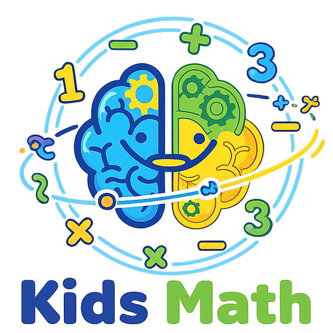
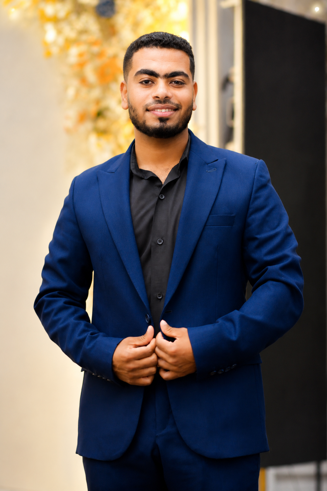
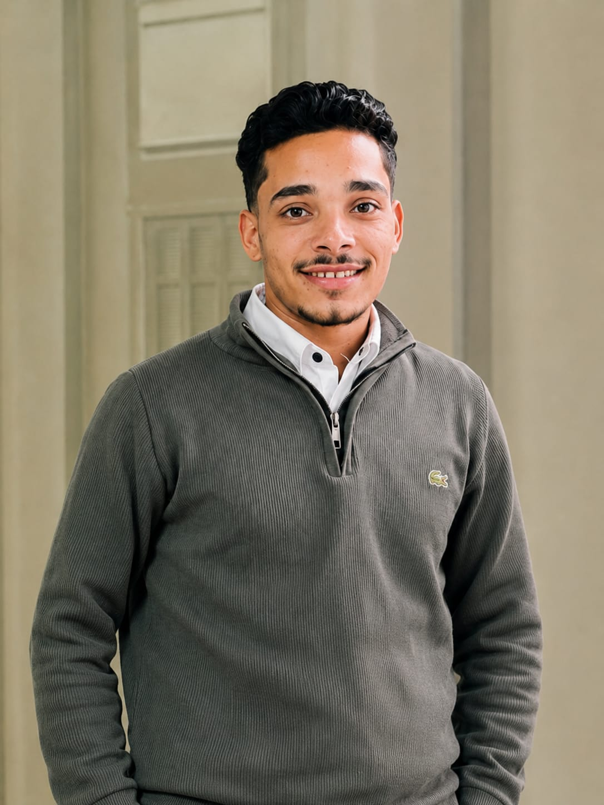
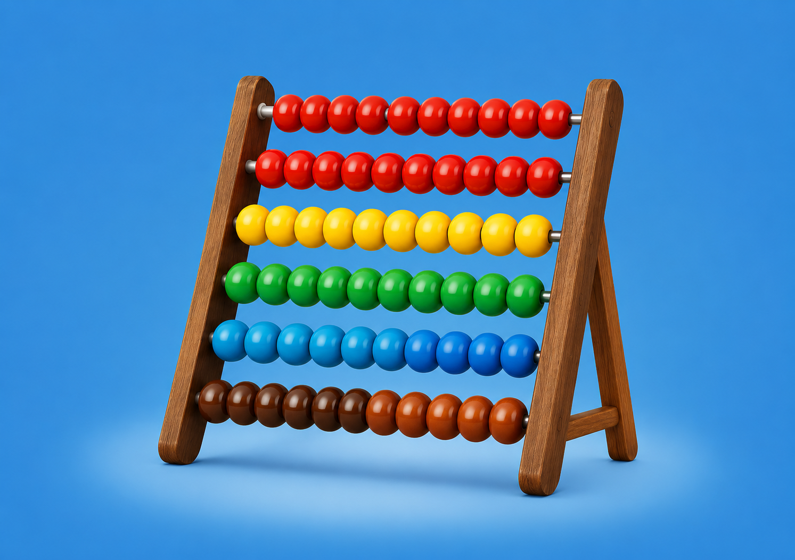
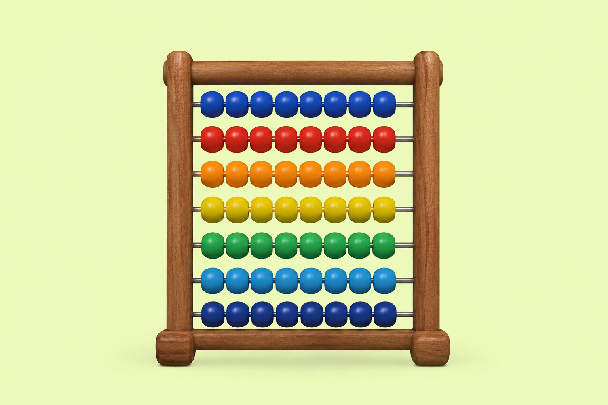
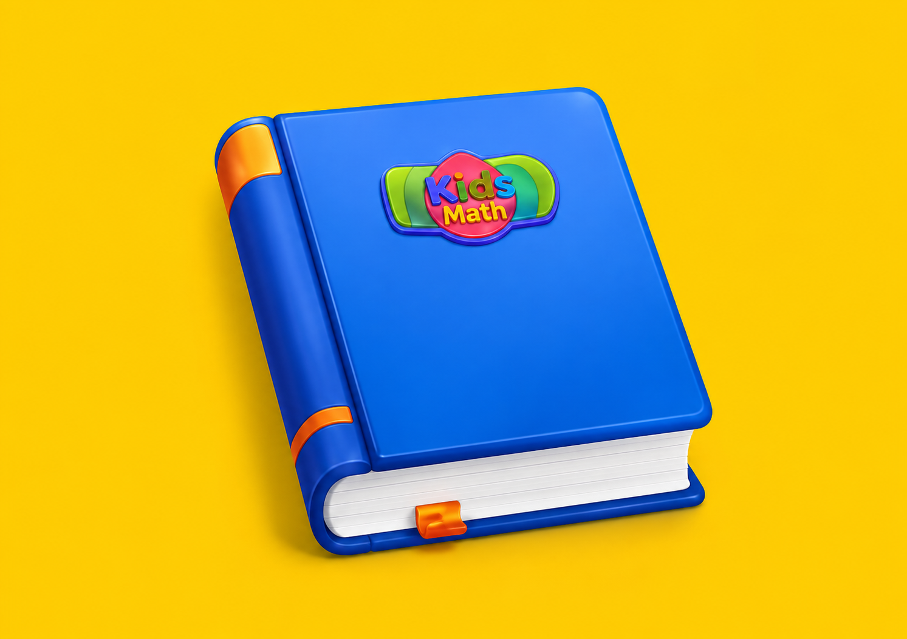
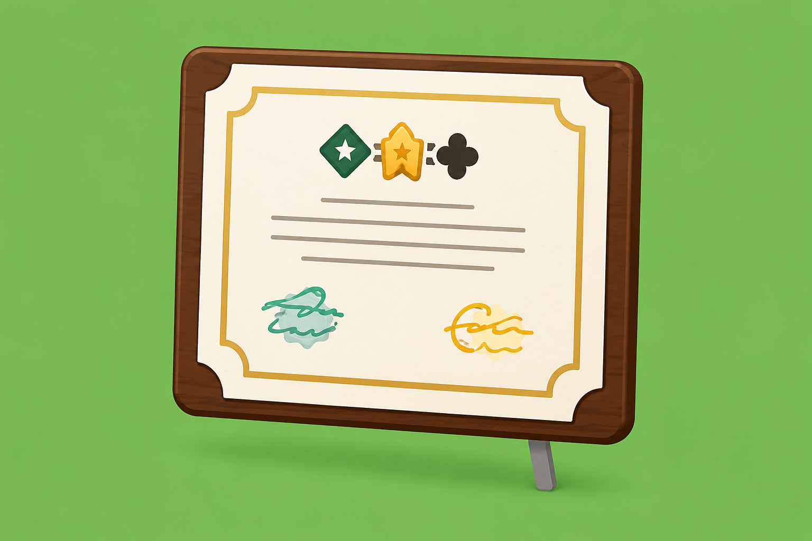

مدير تنفيذي

رئيس مجلس الادارة

مؤسس البرنامج

تنمية سرعة ودقة الحساب
← المزيد
تعليم الأباكس للمستويات المختلفة
← المزيد
برامج تأسيس الأطفال في الرياضيات
← المزيدمسابقات محلية ودولية
← المزيد
برامج تدريب وتأهيل المدربين
← المزيدكيدز ماث هي أكاديمية متخصصة في تعليم الحساب الذهني والأباكس للأطفال من خلال برامج تعليمية مبتكرة تساعدهم على تنمية مهاراتهم العقلية وزيادة ثقتهم بأنفسهم.
ماشاء الله برنامج متكاتف جيد جدا إداره متعاونة مع مدربينها...معانا خطوه ب خطوه وبيساعدونا في كل مشكلة بنعاني منها يعني انا قعدت فتر بعاني من مشكلة ما كدة وكان بسببها مفيش شغل خالص متتر سيد ومس شيماء فضلو معايا لحد ما اتحلت واشتغلت وبقيت الحمد لله وعلموني ازاي اسوق لشغلي علشان اتعرف في المنطقة اللي انا ساكنه فيها يعني ماخدتش الكورس وسكتة لا معايا لحد دلوقتي وبارك الله فيهم❣
انا كنت واحدة من الناس اللى بتكره الحساب عموما دخلت برنامج كيدز ماث بجد حسيت انى الحساب سهل و جداول الضرب ساهله وبسيطه بجد انا ممتنه جدا لتيم كيدز ماث على مجهودهم معانا وتعبهم طول فترة التدريب بجد تعبتو معانا جزاكم الله كل خير على مجهودكم 💗💗💗
رأيي في برنامج Kids Math: برنامج مميز ومنظم، وطريقة شرحه سهلة وواضحة، وفيه أنشطة وأفكار عملية تساعد الطفل على فهم الرياضيات بطريقة ممتعة، وليس مجرد الحفظ تجربتي مع البرنامج كانت مفيدة جدًا، واستفدت منه في تطوير أسلوب شرحي والتعامل مع الأطفال، وإن شاء الله أطبقه مع طلابي لتحقيق أفضل النتائج.
عامةً برنامج كيدز ماث مختلف فـي أكتر من حاجه اللهم بارك منها متابعتكم معاناا ومع كل مدرب لوحده وعايزينا نبقي أشطر مدربين وعايزينا نشتغل بضمير ونحاول نوصل المعلومة للطفل ونسيب آثر وكل اهتمامكم استفادة الطفل ودي حاجة حلوة جداا. ڪل حد في برنامج كيدز ماث لي مسؤولية مختلفه وكلكم قد مسؤوليتكم اللهم بارك...واحنا بنحاول نكون قد ثقتكم فينا باذن الله♥️. كـ برنامج حساب ذهني اتعلمنا كتير وكل حاجه كانت بطريقة سهلة وممتعة واخدنا أفكار كتير واستفدناا كتير وبيكم وبيناا برنامج كيدز ماث اقوي برنامج باذن الله
البرنامج ممتع وبيأدى رساله محتواها التقدم والنجاح وحقق طموح ناس مكنتش لاقيه فرصة تثبت وجودها فيارب دائما فى نجاح وتفوق 💡كيان كيدز ماث 💡👍
برنامج kids Math احسن فرصه انضميت ليها وحقيقي الحاجه اللي مندمتش عليها بيحقق نجاح سواء للطفل أو للمدرب في طرق واستراتيجيات لإستيعاب كل طفل بيعلاج نقاط الضعف عند كل طفل ويزود الثقه بالنفس للطفل بالتوفيق والنجاح دائما للجميع 💗🌸
الحمد لله كانت تجربة جميلة جدًا مع برنامج كيدز ماث، أكتر حاجة ميزته بالنسبة لي هي الاهتمام الحقيقي بالمدربين والمتابعة المستمرة والحرص إننا نقدم أفضل مستوى للأطفال استفدت جدًا من التدريب والأفكار العملية وكل خطوة كان فيها دعم وتشجيع. ربنا يبارك في كل فريق العمل ويجعله في ميزان حسناتهم 🤍🌸
الحمد لله كانت تجربة حلوة اووي مع برنامج Kids Math، واستفدت منها على المستوى العلمي والعملي. البرنامج مميز فعلًا، وطريقته في تعليم الأطفال ممتعة وسهلة، وبتخلي الطفل يحب الحساب ويستمتع بيه بدل ما يحس إنه صعب. المحتوى منظم، والتدريب عملي، وبيساعد بشكل كبير على تنمية سرعة التفكير والتركيز والثقة بالنفس. كل الشكر والتقدير للقائمين على البرنامج للمجهود الرائع، والاحترافية في الشرح والتنظيم، والدعم المستمر، و مساعدتنا خطوة بخطوة بكل صبر واهتمام، وده كان له دور كبير في إن التجربة تكون مميزة ومثمرة. سعيدة جدًا وفخورة إني كنت جزء من البرنامج، وأسأل الله أن يوفقكم دائمًا، ويجعل Kids Math سببًا في نجاح وتميز أعداد أكبر من الأطفال والمدربين. أتمنى لكم مزيدًا من النجاح والتألق والتميز دائمًا. 🌷🤍
تجربة الاشتراك ف البرنامج تجربة مفيدة وجميلة واتعرفنا ع زملا ومدراء محترمين واتشرفنا بمعرفتهم وبالتوفيق للكل يا رب من الحجات اللي عجبتني المتابعة والتشجيع وأنكم دايماً عاوزينا ف أفضل وأحسن صورة لينا وللبرنامج وإن شاء اللّٰه نكون دايماً عند حسن ظنكم ومشرفين المؤسسة وف المقدمة ع طول إن شاء اللّٰه 🤍
تجربة فوق التقييم بكتير، وللحقيقة أنا مسمياه الكيان الشامل لإنه مش مُعتمد على المُسمىٰ بس يعني المُدرب مش داخل يتعلم حساب ذهني إنما فيما بعد هتكتشف إنه كيان شامل: حساب ذهني، ماركتينج، كتابة مُحتوىٰ، صناعة ڤيديوز ترويجية، هيزيد ثقتك بنفسك وهيبقىٰ فيه قوة حضور أمام الطلبة والمُدربين وأولياء الأمور، والمدراء بيبقوا معاك في مُتابعة مستمرة بكامل صبرهم ومن غير أي اعتراض بارك الله فيهم دا غير الزملاء كمان هتحس إنهم عيلتك لإنهم مبيبخلوش بردو لو فيه أي معلومة🫶🏻، ف حقيقي كيان مُميز واللي مندمتش لحظة إني جزء منه🤍.
اجمل تجربه ف حياتي مستفيده جدااا م الحساب الذهني وخصوص ف كيدز ماث والاداره بجد تحفهههه 💗💗
انا هتكلم عن تجربتي مع برنامج كيدز ماث انا وحدا من الناس ال مبحبش الحساب ومبعرفش احسب عموما بس قررت ان انا اكسر الحاجز دا عندى وانضم للبرنامج وحقيقي فرق معايا كتير كمان ف اطفال بيبقي عندهم نفس المشكلة ال كانت عندى دى وبيكونو محتاجين بس تشجيع ومساعدة انهم يبدأ ودا دور كيدز ماث وبجد انا شايفالهم مستقبل ف عالم الحساب الذهنى مبهر ان شاء الله لان الحساب الذهني معاكم بقى لعبة ممتعة مش مادة رخمة بتعلموا الأطفال إزاي يفكروا أسرع من الكمبيوتر مدربين بيعرفوا يوصلوا المعلومة قبل ما يوصلوا للقلب صبركم وإبداعكم هو اللي بيطلع جيل واثق في نفسه انتو مش بس بتعلموا حساب... انتو بتبنوا شخصية معاكم الطفل اللي كان بيخاف من الرياضيات بقى بيحبها و من الآخر *برنامجكم عبقرية ومدربينكم أساس النجاح ده شكراً عشان بتطلعوا من الاولاد نسخة أحسن"* 🤍
انا مكنتش اعرف اي حساب ذهني ولمه حضرت اول سيشن كنت مستغربه شويه بس مع م/شيماء الله يبارك فيها وم/حبيبه ومستر ادهم الله يحفظهم يارب عرفت اي معني حساب ذهني وفوايد الحساب الذهني وعرفت فين بدء اصلا الحساب الذهني وانا مبسوطه اني وحده من برنامح كيدز ماث لانه برنامح كويس صراحه وبدل المره بيعيد الشرح كذا مره لحد متوصل المعلومه انا بشكر كل الي في برنامح كيدز ماث سواء الادار او غير شكرا ليكم ويارب التعب الي بتتعبوه مع المدربين يكون في ميزان حسناتكوم يارب
التجربة كويسة خالص ومع مدربين كويسين جداً في الحساب الذهنى بارك الله فيكم علي تعبكم معانا شكراً جزيلا 🤍🤍
التجربه جميله جدا وذكيه ولطيفه حقيقي مؤثره وفكره ولا اروع وسهلت على الاولاد. كتير واسهل كتير ف الحساب وعايزه اشكر كل المدربين اللي ساعدونا على فهمها بسهوله ويسر بارك الله فيكم جميعا وشكرا على تعبكم بجد
كانت تجربه جميله جدا وكانت فتره جميله مع حضرتكم وحرفيا استفاد كتير اووي كفايه اني اتعرفت ع ناس كويسه ف فترة التدريب وبجد بارك الله فيكم محدش فيكم قصر معانا ف اي حاجه وبالعكس كنتوا زي اخوتنا ومحدش فيكم كان مقصر معانا بالعكس كنتوا بتعملوا المستحيل عشان نفهم ونستفاد والشرح كان جميل جداً جداً ومبسط لينا شكرا جدا ل برنامج كيدز ماث وكل الاعضاء والمدربين فيه بتوفيق انشاء الله وبارك الله فيكم ع تعبكم ومجهودكم معانا 🤍🤍
بجد تجربه جميله استفدت منها جدا واشتغلت بيها كمان واكتر حاجه كنت فرحانه بيها انه صحبنا وعرفنا مس شيماء ومس اية كل الشكر والتقدير والاحترام ليكم بجد وربنا يوفق مستر كريم ومستر أدهم على التعب اللي تعبوا معانه كل الشكر ليكم بجد
كانت تجربة جميله جداوكانت فتره جميله مع حضرتكم وحرفيا استفت كتير اوي كفايه اني اتعرفت علي تاس كويسه ف فترة التدريب وبجد بارك الله فيكم محدش قصر معانا ف اي حاجه وبالعكس كنتو بتعملو المستحيل علشان نفهم ونستفاد والشرج كان جميل جدا جدا ومبسط لينا شكراجدا ل برنامج كيدز ماث وكل الاعضاء والمدربين فيه بتوفيق ان شاء الله وبارك الله فيكم ع تعبكم ومجهودكم معانا🤍🤍
كانت تجربة جميلة جدًا ومفيده بكل المقاييس مع برنامج كيدز ماث واستفدنا منها بشكل كبير. تعلمنا أشياء جديدة، وفهمنا أكثر معنى تحمل المسؤولية، وإزاي نقدر نكون سبب في إفادة الأطفال ومساعدتهم استمتعنا جدًا بكل وقت قضيناه معاكم، والأجمل من كده إنكم كنتم داعمين لينا طوال الفترة، وده شجعنا وخلى التجربة ممتعة ومليانة حماس. أكثر حاجة أثرت فينا وكانت مميزة هي أسلوب تعاملكم معانا وتشجيعكم المستمر. بجد شكرًا ليكم على الفرصة الرائعة وكانت من أجمل التجارب اللي مرينا بيها. 🤍🤍 بجد شكرا لبرنامج كيدز ماث وي بجد احب اشكر المستر سيد على تعبك الفترة اللي فاتت وكل المجهود العظيم اللي عملته معانا. وشكراً للمس شيماء🌺 على معاملتها الطيبة معانا وكانت اكبر حافز لينا.. وشكرا للاداره المستر كريم على دعم لينا. وكل إدارة كيدز ماث على دعمكم الدائم❤❤
انا وحده من الناس الي مكنتش بتحب الحساب اصلا فلما دخلت الحساب الذهني اتعلمت كل حاجه وهو سهل جدا وممتع في نفس الوقت وبصراحه من بعد الحساب الذهني اتعلمت كل مايخص الحساب والله فعلاً انا بقيت احب الحساب جداً